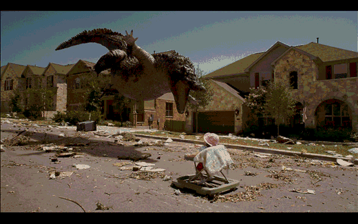
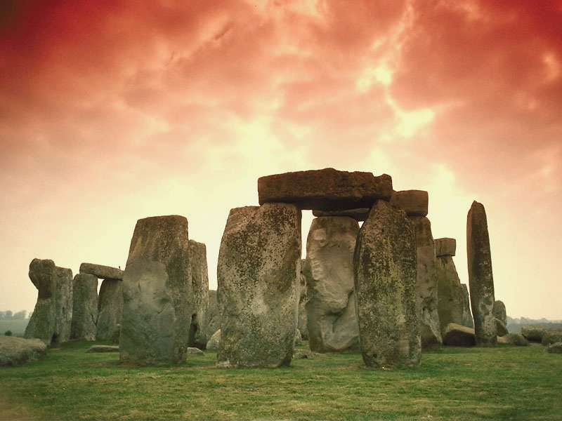

JPEG
The most popular among the image formats used on the web. JPEG files are an example of a 'lossy format', This is because JPEG discards information to keep the image file size small; which means some degree of quality is also lost.
JPEG compression of varying levels, from highest to lowest.
Pros of JPEG:
- 24-bit color, with up to 16 million colors (2^24)these rich colors make it great for photographs that needs fine attention to color detail.
- Almost every digital camera can shoot and save in the JPEG format.
- JPEG is very web friendly because the file is smaller, which means it takes up less room, and requires less time to transfer to a sites.
- Most used and most widely accepted image format
Cons of JPEG:
- They tend to discard a lot of data
- The stronger the compression, JPEG tends to create pixelation (see my cover image above)
- Cannot be animated
- Do not support transparency
GIF
GIF, short for Graphics Interchange Format, is limited to an 8 bit colour palette with only 256 colors. GIF is still a popular image format on the internet because image size is relatively small compared to other image types and are easily animatable.
Using simple GIF animations you can even simulate glasses free 3D!
GIF compresses images in two ways: first, by reducing the number of colors in rich color images, thus reducing the number of bits per pixel. Second, GIF replaces multiple occurring colours. So instead of storing five shades of blue, it stores only one blue.
Compared to JPEG, it is lossless and thus more effective with compressing images with a single color, but not with detailed pictures. In other words, GIF is lossless for images with 256 colors and below. So for an image with a higher colour range allot of information will be lost.
Pros of GIF:
- Can support transparency
- Can do small animation effects
- 'Lossless' quality–they contain the same amount of quality as the original, except of course it now only has 256 colors
- Great for images with limited colors, or with flat regions of color
Cons of GIF:
- Only supports 256 colors
- Sometimes the file size is larger than PNG
BMP
These files are large and uncompressed, but the images are rich in color, high in quality, simple and compatible in all Windows OS and programs. BMP files are also known as raster or paint images.
BMP files are not great in my opinion being large and hard to scale
Example BMP Image
Pros of BMP:
- Works well within most Windows programs
Cons of BMP:
- Does not scale or compress well
- Again, very huge image files making it not web friendly
- No real advantage over other image formats